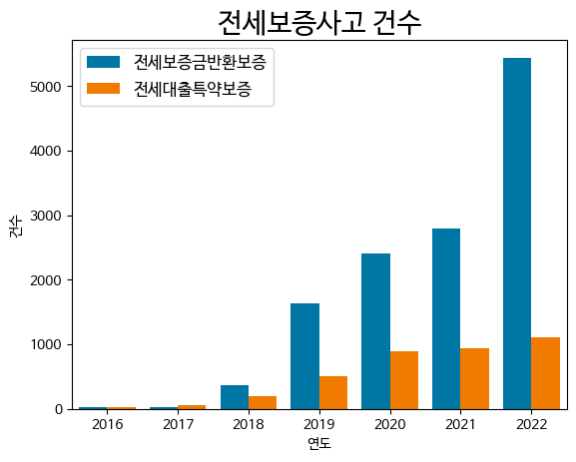
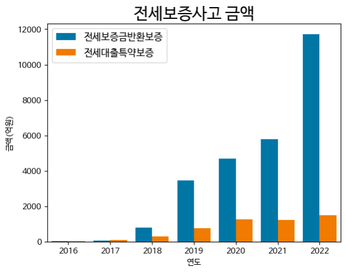
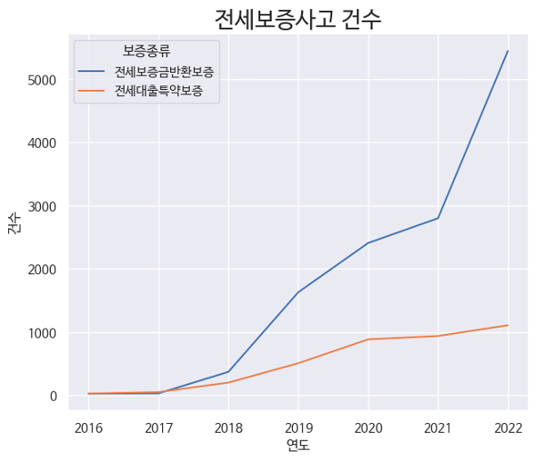
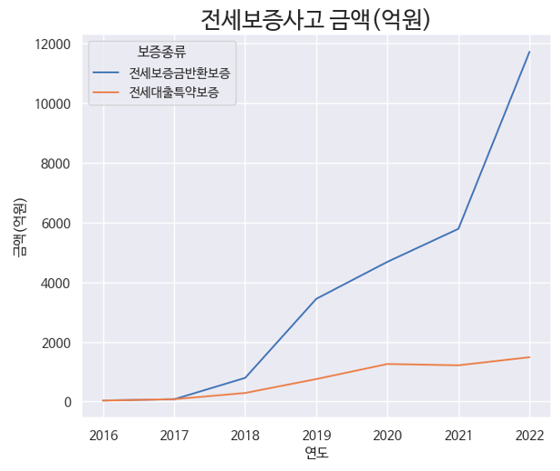
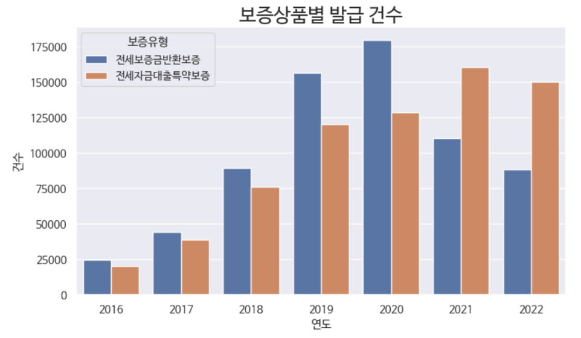
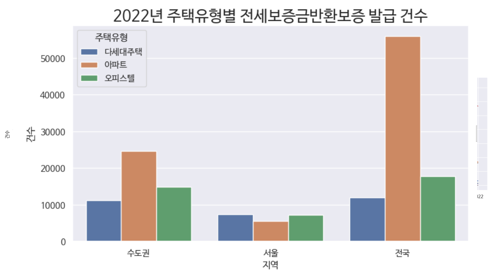

나는 전세사기로부터 안전할까?
계속해서 증가하고 있는 전세사기 더이상 남의 일이 아닙니다.




최근 전세사기의 건수와 금액 모두 꾸준히 증가하였으며, 그 수준은 심각한 수준입니다.

전세보증사고 건수는 늘어가는 추세인데, 반대로 2021년 이후 전세보증상품가입 건수는 줄어드는 추세를 알 수 있습니다. 전세사기를 예방하기 위해서는 전세보증상품의 가입을 늘리는 방향을 제고해봐야 합니다.

